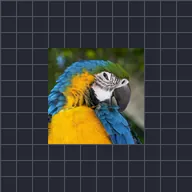

Verschuiving

Verschuift het beeld van de laag en laat het aan de randen van het kader van de laag rondlopen.
Instellingen
| Instelling | Type | Bereik | Standaard |
|---|---|---|---|
| Verschuiving | Punt (X, Y) | -5000 px tot 5000 px | 0 px, 0 px |
| Zachte rand | Getal | 0 tot 1 | 0 |
| Maskeren op laag | Aan of uit | – | Uit |